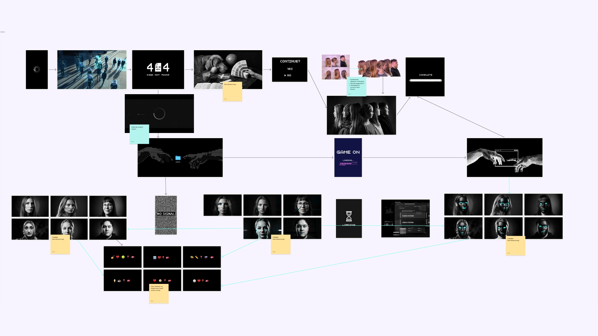
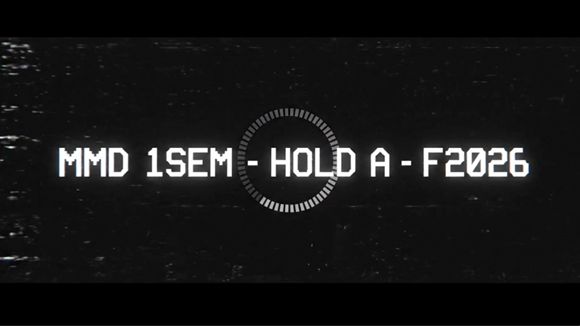

Introuge — Første skridt i digital produktion og samarbejde
Første uge. Jeg valgte Black Mirror-konceptet fordi jeg mente det ville fungere — og fordi jeg syntes fremtidige designere burde se sig selv som data.
Vi arbejdede med GitHub, domæneopsætning og en kort videoproduktion baseret på et fælles koncept.
Digitale grundprincipper
Temaet bestod af tre opgaver, der introducerede centrale digitale og kreative arbejdsprocesser:
- Domæne: Publicering via GitHub Pages
- Præsentationskort: Digital intro af medstuderende
- Gruppeopgave: Idé, produktion og præsentation
Koncept → visuel retning
Vi udviklede et Black Mirror-inspireret koncept for at skabe en systematisk og digital visuel identitet.
- Definerede visuel retning via konceptworkshop
- Skabte visionboard i Figma
- Fordelte roller og planlagde optagelser
- Udarbejdede storyboard som strukturel ramme
Efter første version itererede vi på baggrund af feedback for at forbedre struktur og tempo.

Final introsekvens
En kort Black Mirror-inspireret introsekvens, hvor studerende præsenteres som profiler i et digitalt system.
- Minimalistisk visuel stil med tekst og statiske billeder
- Ens struktur på tværs af profiler
- System-æstetik med subtil humor i data vs. indhold
- Fokus på koncept frem for teknisk kompleksitet
Se final video: YouTube

Læring
Introugen var desorienterende på den måde, første uger altid er. Man ved ikke præcist, hvad man laver eller hvor godt det er — man er bare i gang. Det positive ved Black Mirror-konceptet var, at det gav en klar visuel retning fra starten, så vi ikke brugte tid på at diskutere æstetik.
Det der overraskede mig var, at en uge er meget kort tid til at nå fra koncept til færdigt produkt, selv når projektet er lille. Det mønster gentog sig resten af semesteret.
- Et stærkt visuelt referencepunkt sparer tid — det erstatter hundrede ord om retning
- Rollefordeling i team skal ske tidligt, ikke undervejs
- Første version er aldrig den man ville have lavet med mere tid
Jeg lærte ikke særlig meget teknisk i introugen. Jeg lærte, at jeg altid vil have mere tid end jeg har — og at det er en betingelse, ikke en undtagelse.